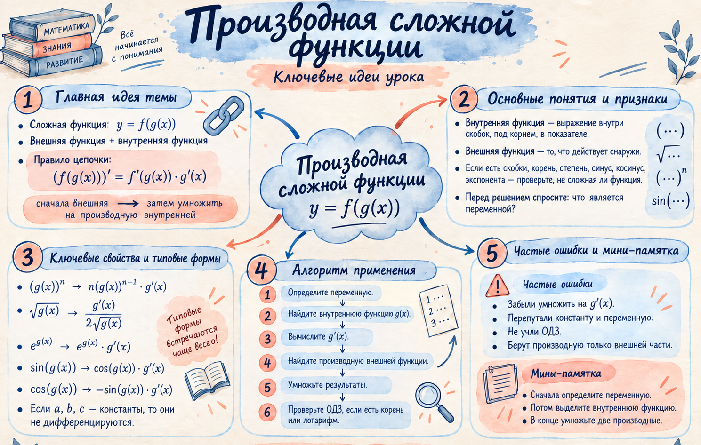

Определение
Два слоя одной функции
В конструкции выражение является внутренней функцией, а — внешней.
Ключ: производная сложной функции равна произведению внешней производной и внутренней производной.
Исследовать корень на модели →Учимся видеть внутреннюю и внешнюю функции, учитывать переменную дифференцирования и применять правило цепочки к корню, экспоненте, степени и синусу.
Краткая визуальная опора по правилу цепочки и выбору переменной.

В конструкции выражение является внутренней функцией, а — внешней.
Пример: .
Внешняя функция — квадратный корень; внутренняя — .
.
Вся степень является внутренней функцией; её производная равна .
Разобрать экспоненту по слоям →Буквы a, b, c — константы.
При дифференцировании по a выражение sin x постоянно.
Внутренняя функция: ; её производная: .
Что нужно определить до применения правила цепочки?
Какой множитель нельзя потерять?
Отмечено: 0 из 7